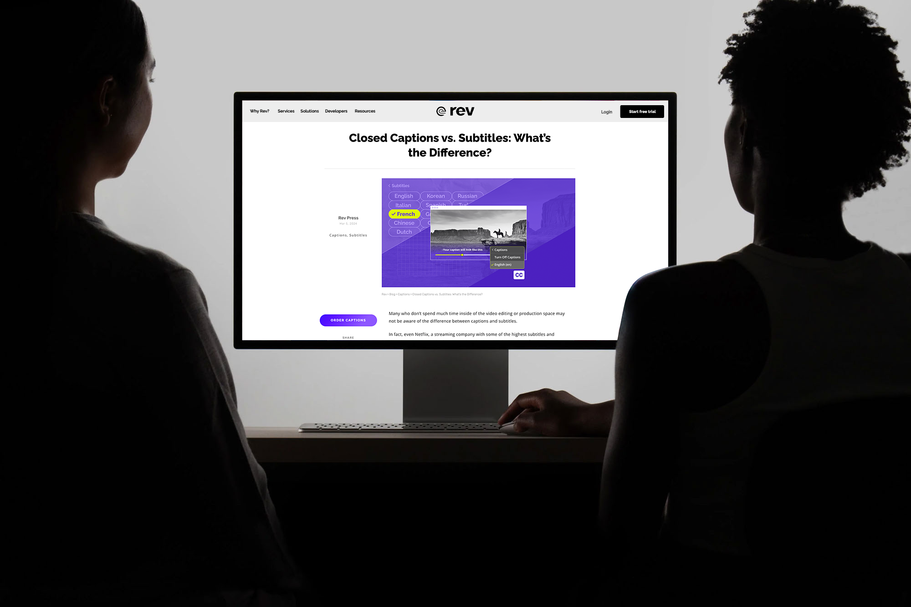
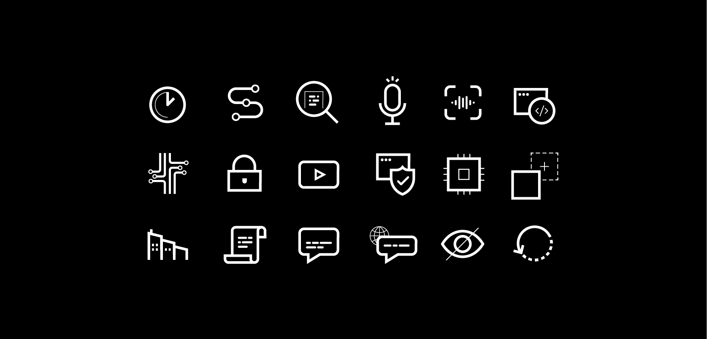
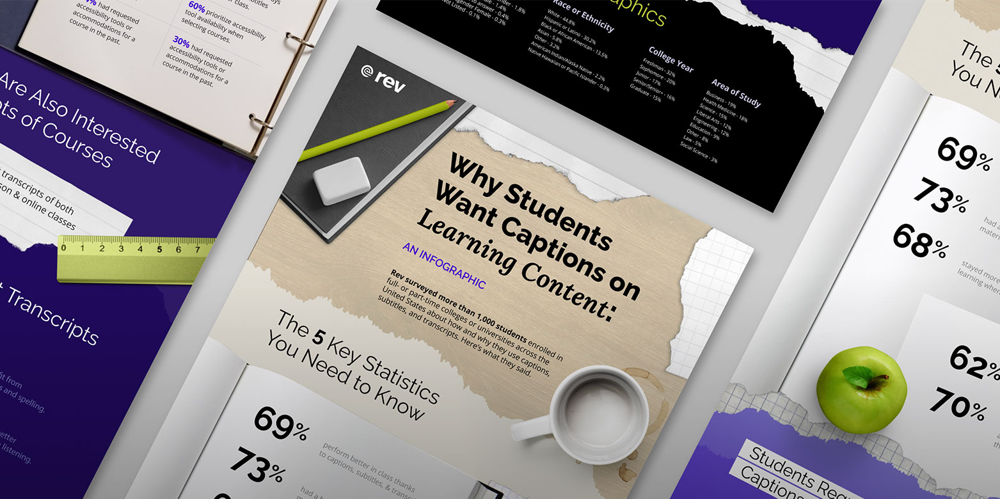
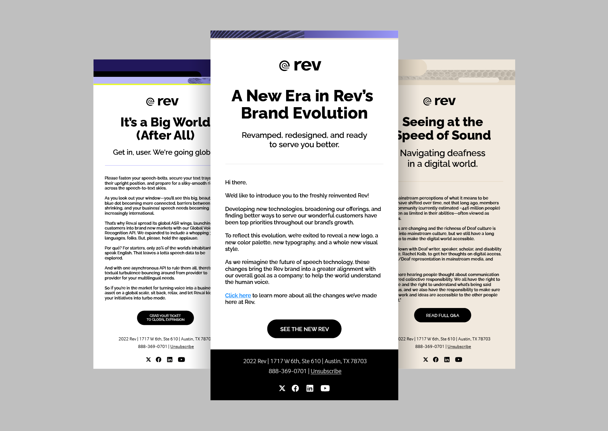
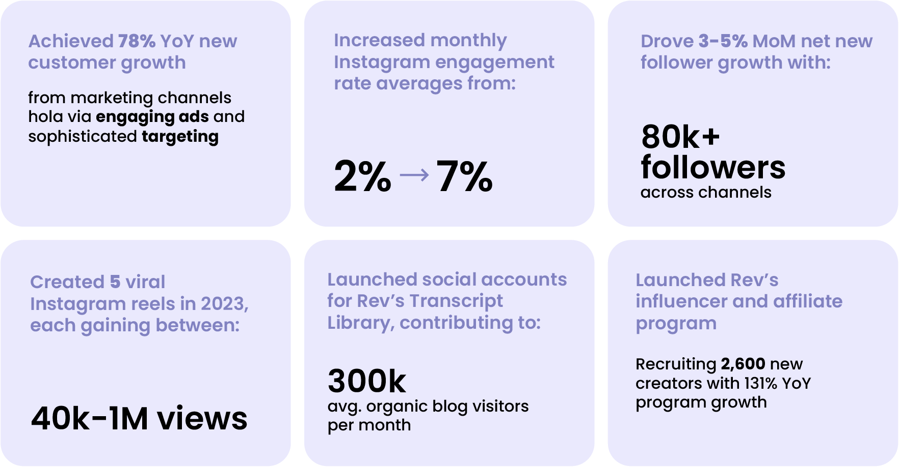

Rev specializes in speech-to-text services, captions, subtitles, and transcription, offering accurate conversions with a user-friendly interface and fast turnaround times.
Website Hero Graphic

Blog Lede Graphics
Rev's organic and paid content was designed to support a dynamic system of demand generation, loyalty, and sales. Social demands are always evolving, so staying agile was important. By combining an intentional content framework with an experimentation-first mindset, we could test, measure, and iterate effectively.

Iconography
Student survey designed in a collage style with the concept of a photomontage of a professor's messy desk, presents responses from over 1,000 students across the United States. It delves into how students utilize captions, subtitles, and transcripts, highlighting their impact on educational accessibility and learning preferences. Survey and content by: Guv Callahan.



Rev's paid acquisition team was tasked with scaling ad spend from $200k to $750k annually.So, in addition to lookalike and interest testing, bidding automation, etc. we needed creative to do some serious heavy lifting to show strong ROI.
Instead of telling prospects accuracy matters in captions, what if we made them feel the awkwardness of an error where it matters: ad headlines, marriage proposals... where the "steaks" are high.Handing viewers a virtual red pen instantly turned them into active participants from passive scrollers. Comment sections were ablaze. Keyboard warriors with varying levels of discernment congregated... many converted.
"Marinade me" was Rev's best performing ad ever. Sky-high conversion, low-low CAC, and whole lotta spice in the comment section. Highlights below:Designer, Illustrator, Motion Artist — Andrés MojicaArt direction, Copywriting — Anna Rachel Rich